A tymczasem w Cameracie...
.
2016-01-05
Dzisiaj kościół Św. Klemensa w Wieliczce rozbrzmiewa kolędami i pastorałkami, w wykonaniu chórów i zespołów z Wieliczki i Gdowa.W X Jubileuszowym Wielickim Wieczorze Kolęd wystąpili:
Stowarzyszenie Muzyczne Chór Camerata pod dyr. Izabeli Szoty (Wieliczka) - organizator imprezy;
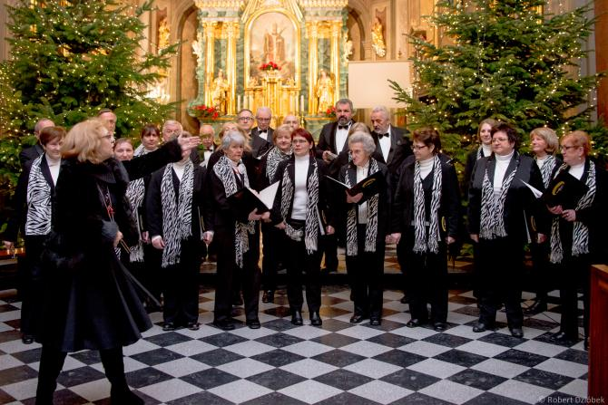
działające nieprzerwanie od 144 lat Towarzystwo Śpiewacze Lutnia pod dyr. Jadwigi Szado (Wieliczka);Zespół Yanabanda pod kier. Sylwii Dzióbek (Wieliczka), koncertujący z dużym powodzeniem od 1994 roku;
Chór Tutte le Corde pod dyr. Elżbiety Gawryszewskiej, działający przy Centrum Kultury w Gdowie od 2006 roku,
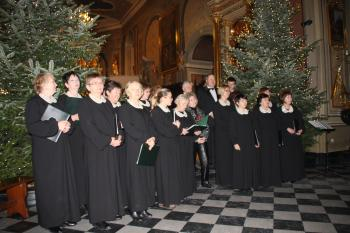 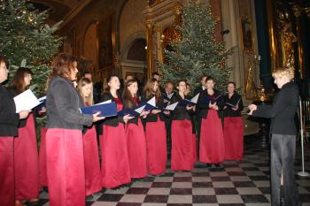 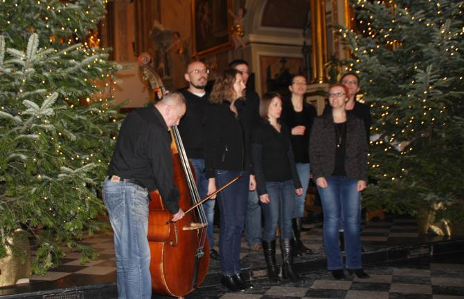
a także absolwentki i uczniowie Szkoły Muzycznej I stopnia w Wieliczce:Maria Komisarz i Roksana Sadowska (śpiew), przyg. przez Izabelę Szota,
oraz Kwartet Smyczkowy w składzie: Laura Kościelska, Maria Gierek, Julia Kania (skrzypce) i Natalia Rapkiewicz (wiolonczela), pracujący pod kier. Marii Sobeńko i Jarosława Murzyna.
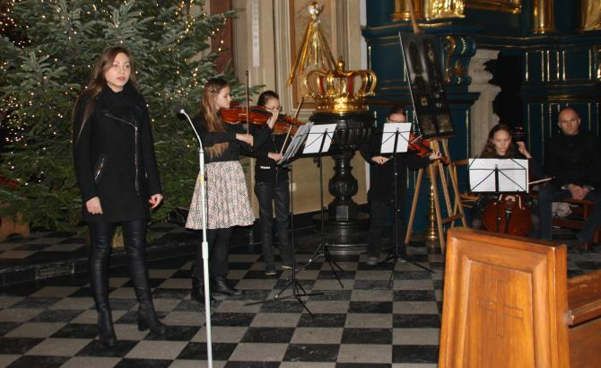 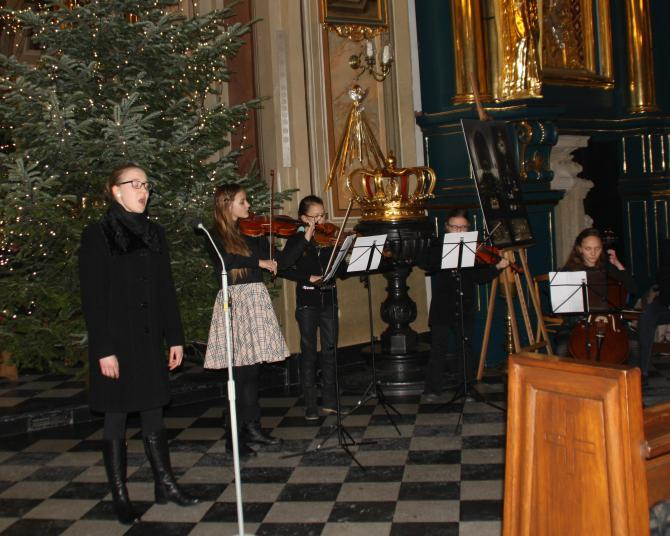
Całość prowadziła Izabela Szota.
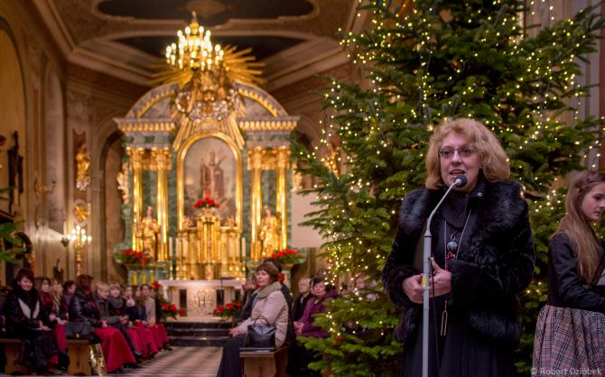
Partnerami przedsięwzięcia byli: Ks. Prałat Zbigniew Gerle - Proboszcz Parafii Św. Klemensa w Wieliczce, Szkoła Muzyczna I stopnia w Wieliczce oraz Centrum Kultury i Turystyki w Wieliczce.
Wspólne kolędowanie poprzedziła Msza Św.,
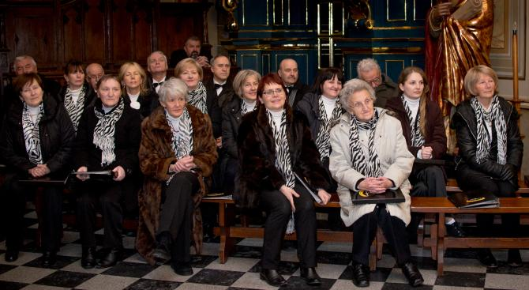
po której każdy z wymienionych zespołów zaprezentował kilka kolęd i pastorałek.
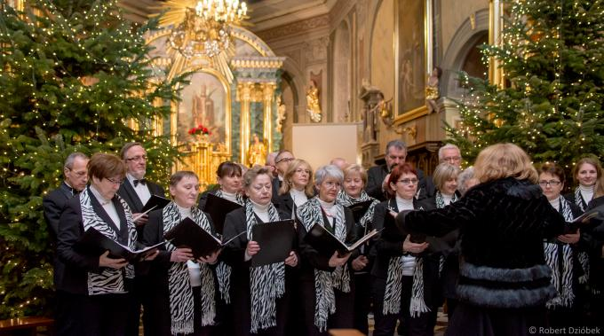
Na zakończenie wnętrze wielickiej świątyni wypełniło się wspólnym śpiewem ponad 100 chórzystów oraz wspaniałej rozśpiewanej publiczności.
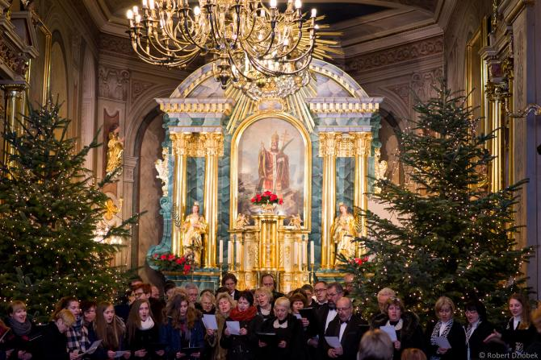 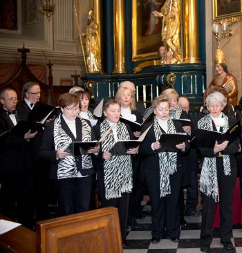 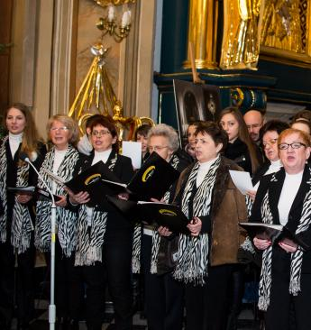 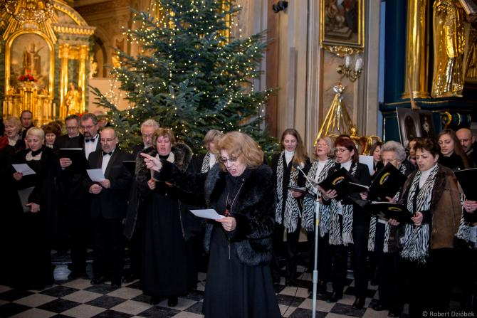
I jeszcze pamiątka z uroczystości radośnie wręczana przez Izabelę Szotę – dyr. chóru Camerata i Małgorzatę Achinger - prezesa chóru Camerata.
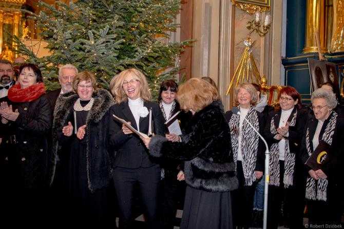
Część zdjęć udostępnił Robert Dzióbek bardzo dziękujemy.